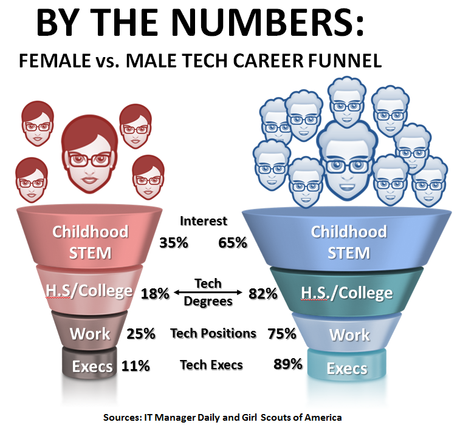

Who Should Code
 |
We firmly believe that anyone can and should code.
It opens unlimited forms of creative expression.
Even now, thousands of people express themselves daily in mediums such as blogs using
platforms created with intricate coding to allow this communication to be acessible as everyone.
|
While it's true that as of now many fields that require of now many fields that require coding lean heavily towards the male demographic, this
is hardly a relfection of the ability needed to code. In fact, there are many famous women coders that are critical to their industry.
|
 |
Rather than a indication of ability then, why does this imbalence often occur? Well, part of it is still left over from the foundations of
the field, back when men held the largest percentage in the demographics of all jobs. It's important to remember while some of this was due to chauvinistic beliefs and prejudice, a large part of it was simply the cultural
traditions of the era.
Remarkably, both men and women equally contributed to the major origins of the field, with Ada Lovelace and Charles Baggage pioneering the start of
digital intelligence.
But, returning to the original question: Who should code? Honestly, it doesn't matter what demographic you come from: male, female, young, or
old. You shouldn't stop pursing a field you love just because you may be part of the majority or minority. It's not about you as a statistic.
As long as you conduct yourself with integrity and respect people equally, then your passion for coding should be explored.
However, coding isn't just for those who love it. It's important that all members of society have at least some exposure to it. It's
important to become personally familiar with how to code, so you gain experience. We're all citizens of a digital world and it's vital we understand it.